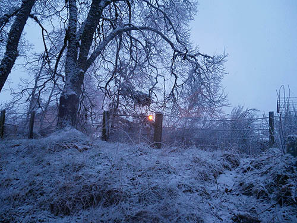

Concerts Releases Listen+Watch CV
Oliver Coates is a cellist, a composer for film and an electronic music producer.
Oliver releases music on RVNG Intl, exploring improvisation, dark ambient music, and intimate melodic cello with distortion and tape modulation. His most recent solo record for RVNG is skins n slime (2020). He has toured as an opening act for Thom Yorke across Europe and the US, and has opened for Radiohead at Emirates Old Trafford in Manchester.
He writes and records music for film, TV and theatre, including the scores for 2022 Cannes selections The Stranger (Official Selection) and Aftersun (Critics Week). He is working with Steve McQueen on his next film and recently completed a movie project for Paramount. Oliver moves continuously between the roles of composer, performer, experimental musician and record producer. He performed a headline set at the 2019 Manchester International Festival curated by David Lynch.
A wide scope in his interpretation of classical and contemporary notated music brought him to prominence in the 2000s and he has been a principal cellist for Aurora Orchestra, London Sinfonietta, Britten Sinfonia and London Contemporary Orchestra. Away from public concert life he has developed a language in electronic music through sequencing various forms of dance and ambient music.
He has collaborated with Mica Levi, Arca, Dean Blunt, Jonny Greenwood and Malibu on live and recorded projects, including the lauded LP Remain Calm (Slip) with Levi and Dior’s 2022 Cruise catwalk presentation with Arca, staged at the Athens Panathenaic Stadium. He has also worked with Lawrence Lek and Marianna Simnett on video art projects, and Hannah Perry and Sam Yates on experimental theatre works. He conducted an orchestra performing his own electronic music for Karl Lagerfeld’s homecoming fashion show for Chanel in 2017 at the Hamburg Elbphilharmonie.
He has curated two editions of DEEP∞MINIMALISM at Southbank Centre in London, where he has also been an artist in residence, featuring the music of Éliane Radigue, Liz Harris, Pauline Oliveros, Hanne Darboven, Morton Feldman, Daphne Oram and Malibu.
His full-length work for strings and pre-recorded sound, Shorelines, based on the North Sea Flood of 1953, commissioned by Cryptic, won a BASCA award for Best Stage Work 2018. His scores for films by Lawrence Lek have been awarded the Converse x Dazed Emerging Art Award 2015 (for Unreal Estate) and the 2016 Vordemburge-Gildewart Artist Prize (for QE3, a Glasgow International commission). He received the Royal Philharmonic Society Breakthrough Award for Young Artist 2011.
…almost unspeakably beautiful, the kind of thing you might request to have played at your funeral or on your deathbed (Philip Sherburne, Pitchfork)
…the most alluring and hypnotising set yet… Coates managed to plummet the audience into an endless rabbit hole of musical beauty, a trance in which linear time and space ceased to exist (The Mancunion)
Composition agent: WME
Everything else: Southern Bird